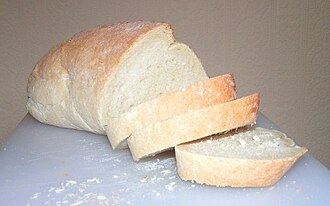

Return to Index
Traditional White Bread

Photo Credit: sannse
Description
A few paragraphs about white bread here.
Ingredients
- 6 1/2 cups bread flour
- 2 1/2 cups warm water (110 degrees F/45 degrees C)
- 3 tablespoons unsalted butter, softened
- 2 packets (1/4 ounce) active dry yeast
- 3 tablespoons white sugar
- 1 tablespoon salt
Steps
- Dissolve yeast and sugar in warm water in a large bowl. Stir in 2 cups flour, butter, and salt.
Stir in the remaining flour, 1/2 cup at a time, mixing well after each addition. When the dough
comes together, turn it out onto a lightly floured surface and knead until smooth and elastic,
about 8 minutes.
- Lightly oil a large bowl, then place the dough in the bowl and turn to coat with oil. Cover
with a damp cloth and let rise in a warm place until doubled in volume, about 1 hour.
- Lightly grease two 9x5-inch loaf pans.
- Deflate the dough and turn it out onto a lightly floured surface. Divide the dough into
two equal pieces and form into loaves. Place the loaves into the prepared pans, cover with
a damp cloth, and let rise until doubled in volume, about 40 minutes.
- Preheat the oven to 425 degrees F (220 degrees C). Place bread in the preheated oven and
lower the temperature to 375 degrees F (190 degrees C). Bake until the top is golden brown
and the bottom of the loaf sounds hollow when tapped, about 30 minutes.